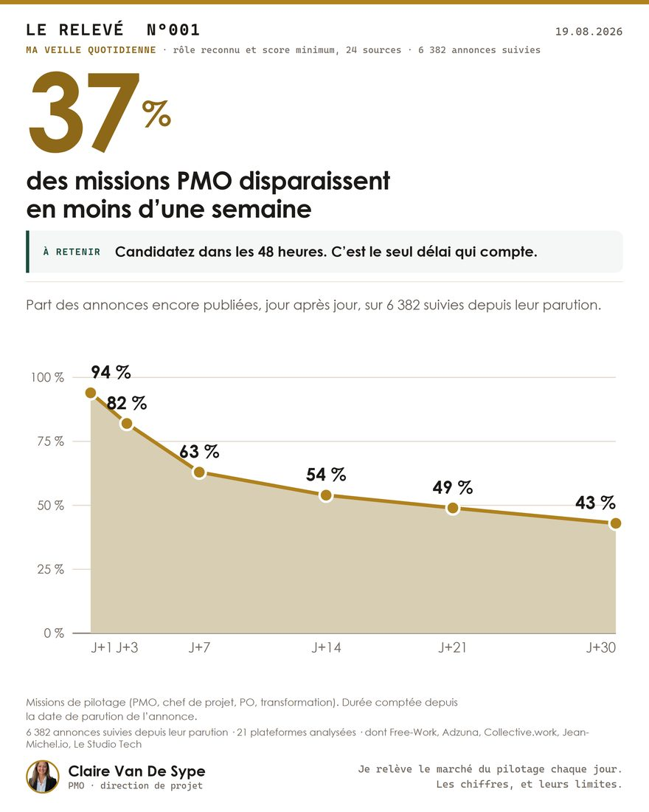
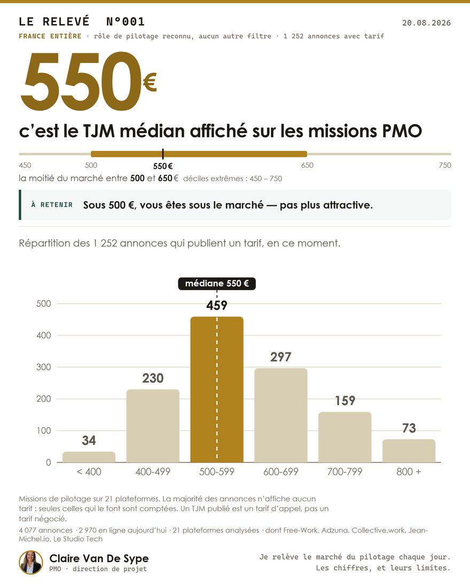
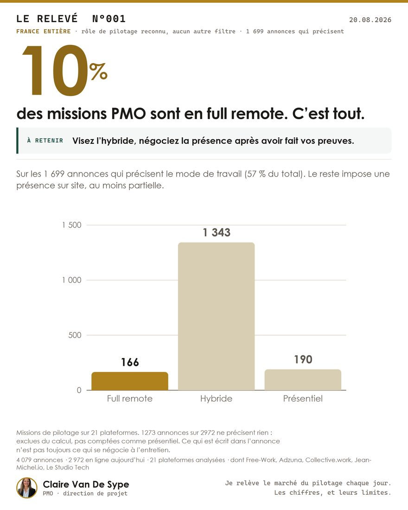
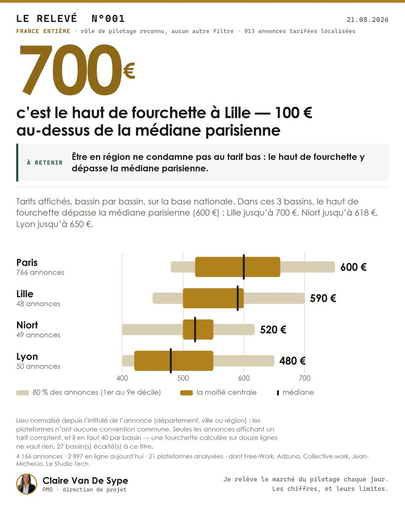

Independent consultant in project direction, PMO and project finance, 12 years of experience. Every morning I record the project-management assignments published in France — here is what the market says today.
That is what I have done for twelve years — and I am available.
For young and junior profiles: I pass on twelve years in the field — video modules, exercise workbooks, my real method, not theory. First modules being recorded.
The templates are already here, free. The online PPM tool is in the making — your data will stay with you.
SKARAB, in the making: every day I come across assignments I do not take. I will bring them to trusted consultants, within a written and transparent framework.
Click your situation: the message leaves already qualified — and you get the matching tool while waiting for my reply.
The go-live date is approaching and the plan no longer holds. I come in mid-flight: I rebuild a single authoritative plan, restore a steering committee that actually decides, and either hold the date or call the new one early enough to be credible.
Write to me about this →Nobody can say what is running, what is late, or what it will cost. I qualify, prioritise and get decisions made — then industrialise the governance so it holds without me.
Write to me about this →A budget built under pressure, CAPEX and OPEX mixed, a roadmap nobody can verify. I frame it from scratch if needed, install a single arbitration grid, and ring-fence what has to land.
Write to me about this →You describe the context. I tell you plainly whether I am the right person — and if I am not, I say that too.
Scope, governance, deliverables — and a day rate aligned with the market I measure daily, not an opaque price grid.
On site or remote. First deliverable: a state of play that holds authority — what is running, at risk, and to be decided.
One email is enough — no commitment. You will be served first when the modules are released.
The video modules, the exercise workbooks and the toolbox templates — at your own pace.
The Guided offer adds two one-to-one sessions with me: CV, LinkedIn profile and a mock interview to land the first job or assignment.
Three lines are enough to start the conversation.
If I am not the right person, I say so — and point you in the right direction if I can.
A slot books in one click if the exchange deserves it.
or open in your default email app
Nothing is sent to this site: your email client opens, you review and send it yourself.
Available for assignments in the Paris region, in northern France, or fully remote. Describe the context in three lines and I will tell you plainly whether I am the right person.
I take on projects that need someone steering, not someone observing.
My day rate is aligned with the median I publish — verifiable on this page, recomputed at every record. You are not negotiating in the dark, and neither am I.
The rituals, tools and references I put in place outlive me — handover included. A PMO who becomes indispensable has failed.
Slipping programmes, budgets to rebuild, unreadable portfolios: I have met your problem somewhere before. And I build my own tools to solve it faster.
My whole track record, assignment by assignment — with the client’s recommendation whenever they left one. Click a logo; the figures are those of my own scope.
Prepare the ERP cutover of a manufacturing site — one of three in the first French wave of a worldwide programme.
The full dossier — detailed track record, methods and tools — can be downloaded at the top and bottom of this page, in French or in English.
The record is my own market watch, made public. Every day I collect the published project-management assignments, follow each one until it disappears, and publish the figures — day rates, time to disappear, remote work, regions.
Measured on 19 August 2026 across 21 platforms, 6 506 listings followed since publication. These figures are recomputed at every record: they are not illustrative.
Boards from the latest record — swipe through.




Pick a role: the median is today’s measurement, across listings that publish a rate.
Free documents, no email required. Help yourself — they are made to circulate.
Who it is for: young and junior profiles who want to learn the steering craft — first jobs, PMO beginnings, career changes. I pass on twelve years in the field; say where you start from, the path adjusts.
Offers and pricing — pre-register in two clicks →
Ready to start? The first step takes thirty minutes — and if I am not the right person, I will tell you during the call.